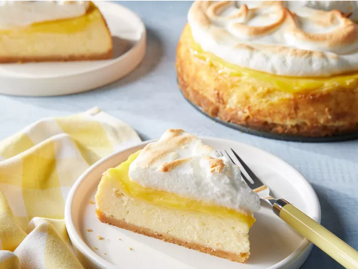

Lemon Meringue Cheesecake

Description:
This lemon meringue cheesecake is the best of both worlds if you love lemon meringue pie and cheesecake!
Ingredients
Crust:
- 2 cups shortbread cookie crumbs
- ¼ cup melted butter
Filling:
- 3 (8 ounce) packages cream cheese, softened
- 1 cup sour cream
- 1 cup white sugar
- 4 large eggs
- ¼ cup fresh lemon juice
- 1 medium lemon, zested
- 1 teaspoon vanilla extract
Meringue Topping:
- 4 large egg whites
- ¼ cup white sugar
- ¼ teaspoon cream of tartar (Optional)
- 1 ½ cups lemon curd
Directions :
- Step
- Step
- Step
- Step
- Step
- Step
- Step
- Step
- Step
- Step
- Step
- Step
- Step
- Step